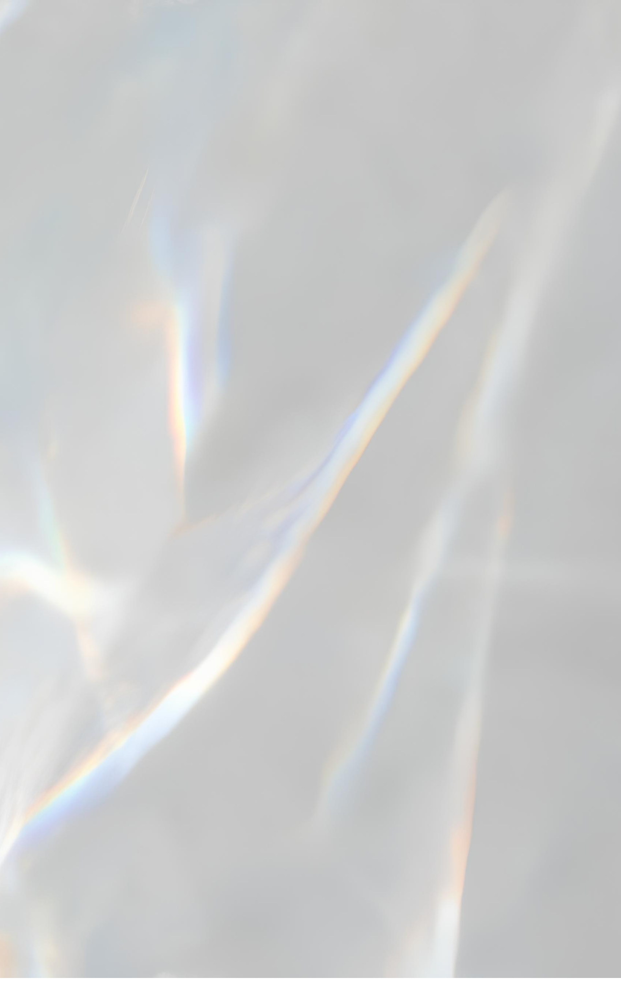

interview
그의 디자인 철학은 소재나 표면에 한정된 탐구가 아니라
'사람의 마음을 움직이는 디자인'이라는 것을 미리 밝혀둔다.
그러나 이번 특집 주제에 맞춰 그가 사용한 소재에 주목해 소개하겠다.
요시오카 도쿠진은 구라마타 시로와 이세이 미야케에게서 디자인을 배웠다.
그래서일까, 그에게는 이 두 거장의 향기가 묻어난다. 이세이 미야케 문하생
시절엔 감촉만으로 소재를 구분하는 훈련까지 받았다는 요시오카 도쿠진.
분명 그는 소재를 탐구하는 데에서 발군의 실력을 보여준다. 2006년에는
<슈퍼 파이버 레볼루션(Super Fiber Revolution)>이라는 전시회를 열 정도로 특히
'섬유'에 대한 관심이 지대하다. 우연히 <내셔널 지오그래픽>에서 읽은 섬유의 미래를 과학적인
측면에서 다룬 기사가 시작이었다. 거미줄처럼 확장되고 있는 광섬유를 다룬 이 기사를 읽고,
그는 직물 전문가를 만나 오랜 연구 끝에 '파네(pane)'의자를 선보였다. 이탈리아어로 '빵'이라는 뜻인
'파네'의자는 구조에 대한 통념에 반박한다. 돌돌만 원통 모양의 섬유를 종이관 안에 넣고 104도의 가마에
구우면 빵처럼 부풀어 올라 의자가 되는 것. 단단한 재료로 강도를 만들어 내는 것이 아니라 받는 힘을
분산시켜서 조직적인 섬유로 지탱하는 구조다. 섬유로 본체 구조까지 만든 이 의자는 허공에 앉은 기분까지 들게 한다.
이런 '섬유'를 건축으로 확장한 작품이 '섬유 건축(Fiber Architecture)'인데, 섬유 구조를 식물처럼 여기고 만든 작품이다.
2005년 스와로브스키 협업 작품
그는 섬유 외에 투명한 소재를 사용하는 재주에도 능하다. 2005년 스와로브스키 팰리스와는 '스타더스트(Stardust)'라는 조명등을 시작으로 최근 스와로브스키 긴자 매장까지 디자인했다. 도요타 전시 부스를 맡은 2005년 도쿄 모터쇼에서도 그는 자동차 후두부에 부착한 조명기구인 미등을 사용했다. 빛의 반사면이 된 10만 개의 미등은 전시장 내부의 이미지를 왜곡해 사람이 붐비는 것처럼 보이게 한다. 게다가 '올해의 디자이너'상을 수상한 2007년 디자인 마이애미에서는 투명한 2만 개의 빨대를 '쓰나미'처럼 풀어놓고 '토네이도'를 표현했다. 그는 재료를 흥미롭거나 새로워서 선택하지는 않는다. 모든 것이 가상화되어 사라지는 디지털 시대, 흥미로운 재료 이상이 되기 위한 물질적인 방법을 모색할 뿐이다. www. tokujin.com 글 임나리 기자
interview 요시오카 도쿠진
“단순하면서 힘이 있다. 이것은 구조와 디자인의 일체화를 의미한다”
현대 건축과 디자인은 ‘표면’을 적극적으로 활용한다. 디자인에서 표면이 왜 각광받고 있다고 생각하는가? 나는 표면이라는 개념에 흥미를 갖고 있지는 않다. 디자인을 할 때 내가 제일 중요하게 여기는 것은 ‘사람의 감각에 어떻게 호소할 것인가’라는 문제다.
‘파네’ 의자나 ‘섬유 건축’ 같은 작품을 보면 이세이 미야케의 영향이 느껴진다. 주름진 옷 ‘플리츠 플리즈(Pleatz Please)’가 보여주는 유연성이 드러난다. 당신은 단단한 것이 아닌 부드러운 것에 관심이 많아 보이는데, 이에 대한 생각이 궁금하다. ‘파네’ 의자의 아이디어와 콘셉트는 이세이 미야케와 관련성은 전혀 없지만, 미야케 디자인 사무소에서 지내던 동안의 영향이 아닌가 싶다. 다른 제품 디자이너에게는 없는 귀중한 경험인데, 바로 부드러움과 가벼움에 대한 인식이다. 당시 손의 감촉만으로 소재를 구분하는 등 혹독한 훈련을 했다. 이것이 ‘파네’ 의자의 배경으로 보일지 모르겠지만, 직접적인 영향은 받지 않았다.
당신은 표면을 시각적인 요소보다 체험적인 요소로 보는 것 같다. 예를 들면 빨대나 휴지를 이용한 모로소(Moroso) 쇼룸이나 ‘부케’ 의자가 그렇다. 내가 만들고 싶은 것은 표면보다는 ‘현상’이다. 이 현상은 자연현상에 가장 가까운 것이다. 세상에서 가장 아름다우며, 다시 재생되지 않는, 시간과 함께 변하는, 자연이 만들어내는 설치작품. 세상의 모든 사람은 자신이 경험한 자연의 아름다움을 내부에 간직하고 있는데, 내 작품을 체험하면서 그 경험과 링크되지 않나 싶다.
당신은 특히 ‘섬유’에 관심이 많은 것 같은데, 섬유의 어떤 점에 주목하는가? 섬유는 식물과 같은 구조를 가지고 있다. 지금까지 건축 구조는 딱딱한 개념으로 ‘강도’를 만든다는 것이 상식이었다. 내가 생각하는 미래의 건축은 세세한 섬유조직이 엮이는 것으로 가볍지만 강도를 겸비한 구조다. 그것은 마치 일본식 합기도(aikido)처럼 경쾌한 움직임으로 시작해 충격을 분산하면서 동시에 힘을 만드는 것과 비슷하다. 섬유조직 하나하나는 매우 가늘고 약하다. 하지만 이것이 집결되면서 오히려 힘이 분산되고 더욱 강도 높은 구조체를 만들어낸다는 사실은 흥미롭다.
당신은 스와로브스키와 오래 작업했다. 크리스털이란 재료에 대해서 어떻게 생각하는가? 나는 지금까지 다수의 작품에 투명한 재료를 사용했다. 스와로브스키와의 작업은 ‘크리스털 팰리스’라는 작업에서 광섬유를 거친 영상이 크리스털 끝에 맺혀지는 샹들리에 ‘스타더스트(Stardust)’를 제작한 것이 시작이다. 크리스털이라는 소재를 연구할수록 화려함보다 시적인 투명함이 본래 크리스털의 아름다움이라는 생각이 든다. 스와로브스키 긴자 매장 작업은 소재가 지닌 본래의 아름다움을 사람들에게 전달하는 것이 목표였다. 지금까지 소재에 대한 모든 사용법을 꾸준히 실험한 것은 좋은 경험이었다. 그것을 크리스털이라는 테마로 표현하고 싶었다.
당신의 최근 작품에는 거의 색이 없는데, 색을 배제하는 특별한 이유가 있는가? 올해 밀라노국제가구박람회에서 발표한 ‘부케(Bouquet)’ 의자와 ‘아미 아미(Ami Ami)’ 의자는 색을 사용했다. 기본적으로 자연계의 원리나 색상을 최대한 사용하려 한다. 백색이나 투명한 것을 사용한 이유는 색이 아닌 빛 자체를 표현하고 싶었기 때문이다.
당신이 2007년 디자인 마이애미(Design Miami)에서 보여준 설치작품 ‘토네이도(Tornado)’는 2만 개의 빨대를 사용해 구름과 눈을 표현했다. 왜 빨대였는가? 2006년 에르메스 쇼윈도 설치작품 ‘리멤버런스(Remembrance)’가 시작이다. 이 작업은 단순히 투명한 봉이 다양한 형태로 변하는 이미지였다. 하지만 소비적인 느낌이 들어 일상적인 소재를 쓰고 싶었는데, 문득 빨대가 생각났다. 이를 진행하는 과정에서 큰 스케일로 작품을 실현해보고 싶기도 했다. 그때가 마침 디자인 마이애미다.
앞으로 표면은 어떻게 발전하리라 보는가? ‘단순하면서 힘이 있다.’ 이것은 구조와 디자인의 일체화를 의미한다. 자연계이 초목 또한 나름의 이유를 가지고 색과 조형을 만들어낸다. 사각형 혹은 원형이라고 해서 단순하다고 하지는 않는다.
최근 진행하는 작업이 있는가? 요즘 가장 즐겨 쓰고 좋아하는 단어는 ‘자연’과 ‘자연에서 태어난 조형’이다. 인간이 만들어내는 것에는 한계가 있다. 아름다움이라는 것은 우연하게 태어나는 것이 아닐까? 이번 인터뷰에서 빈번하게 자연이라는 단어를 쓰는데, 실은 오는 10월 도쿄 ‘21-21 디자인 사이트(21-21 Design Sight)’에서 <세컨드 네이처(Second Nature)>라는 전시회를 연다. 여기서 발표하게 될 새로운 의자는 21세기의 아이콘이 될, 미래를 여는, 지금까지 역사에서 볼 수 없었던 작품이 될 것이다.
[출처] 월간 디자인 design 2008년 9월호